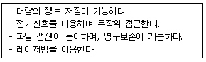
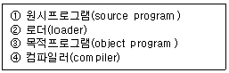

사무자동화산업기사 (2003-03-16 기출문제)
1과목: 사무자동화 시스템
1. 기억장치의 운영에서 여러 개의 작은 사용 가능 부분이 생길 수 있는데 이를 프래그멘테이션(fragmentation)이라 한다. 이 때 작은 부분을 모아서 보다 큰 영역을 만들 수 있는데 이러한 작업을 무엇이라 하는가?
- segmentation
- page frame
- compaction
- dynamic partition
(정답률: 31%)

2. 데이터베이스를 설계하고 행정감독 및 분석에 대한 책임이 있는 자는?
- 터미널 사용자
- 오퍼레이터
- 데이터베이스 관리자
- 응용 프로그래머
(정답률: 92%)
3. 컴퓨터시스템이 중앙 집중 형태의 시스템에서 분산처리시스템의 형태로 발전한 이유는 여러 가지 장점이 있기 때문이다. 분산처리시스템의 장점에 속하지 않는 것은?
- 자원공유(resource sharing)
- 연산속도향상(computation speed-up)
- 신뢰성(reliability)
- 창조성(creation)
(정답률: 73%)
4. 사무자동화 추진목표의 여러 단계 가운데 계량적이고 처리방법 등이 구체적인 단계는?
- 부분구성 목표단계
- 최종구성 목표단계
- 세부 목표단계
- 통합구성 목표단계
(정답률: 71%)
5. OA화 추진방법에 속하지 않는 유형은?
- 전사적 접근방식
- 업무별 접근방식
- 시스템 접근방식
- 부분전개 접근방식
(정답률: 52%)
6. 사무자동화와 직접 관계있는 경영(사무)의 분산정보처리시스템의 종류가 아닌 것은?
- 미니컴퓨터에 의한 분산정보처리시스템
- 계층형 분산정보처리시스템
- 다중-집중정보처리시스템
- Network형 분산정보처리시스템
(정답률: 48%)
7. 데이터베이스 관리 시스템(DBMS)의 특징이 아닌 것은?
- 자료 중복의 최소화
- 자료의 공동 이용
- 자료의 무결성 유지
- 자료 처리 방법의 단순화
(정답률: 71%)
8. 데이터베이스 관리시스템의 기능과 맞지 않는 것은?
- 데이터베이스 내의 자료관계를 설정한다.
- 자료의 보안을 담당하지 않아도 된다.
- 자료의 회복(Recovery)능력을 갖추고 있다.
- 질의어(Query Language) 능력을 갖추고 있다.
(정답률: 91%)
9. 다음에서 설명하는 자료저장 기기는?

- 마이크로필름
- CAR 시스템
- COM 시스템
- 광디스크 시스템
(정답률: 74%)
10. 다음 중 인텔리전트 빌딩의 정지화면 서비스의 실현에 속하지 않는 것은?
- 비디오텍스를 이용한 예약, 검색 서비스 실현
- FAX 우편 기능의 실현
- 전자게시판, 전자파일 서비스 실현
- 동화회의 시스템 서비스 실현
(정답률: 63%)
11. 주기억장치에 기억되어 있는 명령어를 호출하여 중앙처리장치로 가져오도록 하는 명령어 호출 사이클은?
- Interrupt cycle
- Fetch cycle
- Execution cycle
- Indirect cycle
(정답률: 50%)
12. 컴퓨터 중앙처리장치의 구성요소에 포함되지 않는 것은?
- 주기억장치(Memory)
- 산술 및 논리연산장치(ALU)
- 하드디스크(HDD)
- 제어장치(Control Unit)
(정답률: 64%)
13. 전자상거래 시스템에 관한 사항이다. 전자상거래의 유형 중 소비자와 기업간 거래를 무엇이라 하는가?
- B to C
- B to B
- C to C
- C to P
(정답률: 74%)
14. OA 기기의 통합을 촉진시킨 가장 직접적인 배경은?
- 마이크로필름의 개발
- 시분할 시스템의 등장
- 정보검색 기술의 발달
- 근거리 통신망의 개발
(정답률: 57%)
15. 시스템의 성능평가 척도로서 주로 온라인 리얼타임 처리에서 가장 중요한 지표는?
- 응답시간
- 처리능력
- 반전시간
- 에러복구시간
(정답률: 74%)
16. Data Base System의 언어에 포함되지 않은 것은?
- TCP/IP
- DDL
- DML
- SQL
(정답률: 73%)
17. 사용자가 작성한 프로그램, 즉 기계어로 번역되기 이전의 프로그램을 무엇이라고 하는가?
- 원시프로그램
- 목적프로그램
- 제어프로그램
- 처리프로그램
(정답률: 84%)
18. 사무자동화에 대한 목표, 기기, 오피스의 형태 등의 사항을 설계하고 그에 대한 문제점, 내외적인 환경, 조직 등에 대한 제약 조건 및 문제점 등에 대하여 명확한 파악이 있어야 한다. 이는 사무자동화의 기본요소 중에서 어느 분야에 해당하는가?
- 철학적 측면
- 시스템적 측면
- 인간적 측면
- 기계적 측면
(정답률: 42%)
19. 사무자동화의 추진단계에서 환경 분석의 내적 분석사항으로 적당하지 않은 것은?
- 인적분석
- 사무기기 분석
- 사무구조분석
- 정보통신 활용분석
(정답률: 63%)
20. 사무자동화는 고도화된 자동화로서 ABCD 라는 알파벳으로 표시하여 정의할 수 있다. 여기서 C 에 해당하는 것은?
- 자동화사무실
- 사무기기
- 통신시스템
- 자료처리시스템
(정답률: 70%)
2과목: 사무경영관리 개론
21. 다음 중 폐기 대상의 자료는?
- 자료로서 관리할 필요가 있는 자료
- 1본의 복사본을 소장하고 있는 자료로서, 열람빈도가 적은 자료
- 활용이 요구되는 자료
- 당해 자료기관의 장이 소장할 필요가 없다고 인정하는 자료
(정답률: 85%)
22. 계획을 세우고 이를 달성하기 위하여 인간, 기계, 자료, 방법 등을 조정하는 모든 활동을 무엇이라고 지칭하는가?
- 조직
- 관리
- 행동
- 계획
(정답률: 74%)
23. 사무 관리에서 중간계층의 관리자가 해야 할 일은?
- 예산의 편성 및 기획
- 회사설립 목적의 설정
- 인사방침의 설정
- 제품의 생산
(정답률: 64%)
24. 정보전달방식을 전자적으로 하는 것으로써 메시지를 컴퓨터에 축적하여 아무 때나 수신자가 검색, 출력하여 볼 수 있는 시스템을 무엇이라고 하는가?
- 팩시밀리 시스템 (Facsimile System)
- 전자메일 시스템 (Electronic Mail System)
- 마이크로필름 시스템 (Microfilm System)
- CAR 시스템 (Computer Assisted Retrieval System)
(정답률: 64%)
25. 문서자료의 처리 완결 후부터 보존되기 전까지의 관리를 무엇이라고 말하는가?
- 작성
- 보관
- 처리
- 발송
(정답률: 77%)
26. 사무실의 주요기능과는 거리가 멀다고 보는 것은?
- 의사결정 기능
- 사무통제 기능
- 의사소통 기능
- 사무처리 기능
(정답률: 50%)
27. EDI의 표준을 크게 나누고자 할 때 가장 적합한 방식은?
- 수치코드표준, 통신표준
- 양식표준, 통신표준
- 수치코드표준, 문자코드표준
- 문서표준, 수치코드표준
(정답률: 52%)
28. 사무실내의 배치를 할 때 고려해야 할 사항으로서 옳지 않는 것은?
- 통일된 사무용기구를 쓴다.
- 채광은 하측에서 잡히도록 한다.
- 자주 사용하는 사무용품은 그것을 사용하는 사무원 가까이에 배치한다.
- 업무에 알맞은 면적을 확보한다.
(정답률: 86%)
29. 음의 크기 단위는 폰(Phone)이다. 사무실에 알맞은 소음 허용 한도는 몇 폰(Phone) 정도인가?
- 20 폰(Phone)
- 40 폰(Phone)
- 55 폰(Phone)
- 85 폰(Phone)
(정답률: 62%)
30. 사무 관리의 기본 계획에 관한 내용이 아닌 것은?
- 데이터 양식의 결정
- 사무량 예측
- 사무 처리 방식의 결정
- 자동화 시스템 결정
(정답률: 51%)
31. 사무조직화가 관리활동에서 중요한 이유를 설명한 것으로 잘못된 것은?
- 업무흐름을 명확히 한다.
- 의사소통에 도움을 준다.
- 직무간의 갈등을 막을 수 있다.
- 업무성과를 측정할 수 있다.
(정답률: 50%)
32. 다음 중 EDI의 효과에 대한 설명 중 거리가 먼 것은?
- 불확실성의 감소
- 고비용, 고능률
- 오류의 감소
- 거래시간의 단축
(정답률: 80%)
33. 어떤 목적을 달성하기 위한 합리적인 인간의 활동을 관리(Management)라고 한다. 관리의 기본특성이 아닌 것은?
- 연속성
- 향상성
- 정보성
- 통일성
(정답률: 42%)
34. 프로그램을 발행하거나 이를 특정인 또는 불특정 다수에게 제시하는 것을 무엇이라고 하는가?
- 배포
- 공표
- 제작
- 복제
(정답률: 56%)
35. 사무작업을 한곳에 집중화하여 처리함으로써 장점이 되지 못하는 것은?
- 감독이 용이하고 신속 정확하게 처리할 수 있다.
- 사무의 파킨슨 법칙화 할 수 있다.
- 사무처리 기능의 전문화와 기능별 인력을 양성할 수 있다.
- 사무작업의 측정이 용이하다.
(정답률: 49%)
36. 실시의 시기와 순서의 관점에서 그 조직의 활동을 원할히 수행하도록 업무 수행에 필요한 이해나 견해를 마찰이 없도록 결합하고 조화시키는 관리 기능은?
- 계획화 (Planning)
- 조정화(Adjusting)
- 통제화(Controlling)
- 조직화(Organizing)
(정답률: 62%)
37. 사무작업의 분산화 목적과 거리가 먼 것은?
- 작업 시간, 거리, 운반 등의 간격을 줄일 수 있다.
- 사무 작업자의 사기 저하를 방지 할 수 있다.
- 사무의 중요도에 따라 순조롭게 처리할 수 있다.
- 사무원 관리가 용이하다.
(정답률: 70%)
38. 과학적 사무 관리의 목표로써 옳지 않은 것은?
- 인원의 감축
- 생산성 증대
- 능률의 향상
- 낭비의 배제
(정답률: 87%)
39. 네트워크의 보안에 관한 설명이 아닌 것은?
- 시스템의 액세스를 제어하는 방식
- 네트워크의 여러 서브시스템을 통해서 데이터가 이동할 때 데이터의 보안을 확실하게 하는 방식
- 전송하는 데이터가 복사되거나 또는 누군가에 의해 조작되지 않게 하는 방식
- 암호화된 데이터를 해독해주는 방식
(정답률: 78%)
40. 다음 중 사무의 기능화 원칙에 관한 내용으로 적절하지 못한 것은?
- 비합리적인 사람중심이다.
- 업무중심조직이다.
- 직계제도이다.
- 목적달성의 업무중심이다.
(정답률: 79%)
3과목: 프로그래밍 일반
41. C 언어에서 사용되는 자료형이 아닌 것은?
- double
- short
- integer
- float
(정답률: 78%)
42. 프로그램에서 변수들이 갖는 속성이 완전히 결정되는 시간을 무엇이라 하는가?
- 컴파일 시간(Compile time)
- 바인딩 시간(Binding time)
- 실행 시간(Run time)
- 로드 시간(Load time)
(정답률: 60%)
43. 고급 프로그래밍언어에 관한 설명 중 옳지 않은 것은?
- COBOL언어는 회사의 사무용 자료처리 언어로 개발되었으며, 기계 독립적인 부분과 기계 종속적인 부분을 분리하는데 성공한 언어이다.
- PASCAL언어는 간결하면서도 강력한 언어로 손꼽히고 있으며, 교육용 언어로는 뛰어나다는 평가를 받고 있다.
- FORTRAN은 과학 계산용 언어로서, 뛰어난 실행 효율성으로 성공한 언어이며, 번역기를 구현한 최초의 고급 언어로 평가된다.
- C 언어는 고급 언어 프로그래밍과 저급 언어 프로그래밍도 가능한 언어이며, 인터프리트 방식의 대표적 언어이다.
(정답률: 71%)
44. 시스템 프로그래밍에 가장 적합한 언어는?
- COBOL
- FORTRAN
- C
- BASIC
(정답률: 85%)
45. 프로그램 수행 순으로 옳게 나열된 것은?

- ②-③-④-①
- ①-②-③-④
- ①-④-③-②
- ④-②-①-③
(정답률: 86%)
46. 인터럽트의 종류 중 프로그래머에 의해 발생하는 인터럽트로서 보통 입출력의 수행, 기억장치의 할당 및 오퍼레이터와의 대화 등의 작업 수행시 발생하는 것은?
- 입출력 인터럽트
- 외부 인터럽트
- 기계 검사 인터럽트
- SVC 인터럽트
(정답률: 49%)
47. 운영체제에서 제어 프로그램(control program)에 해당하는 것은?
- 언어번역(language translator) 프로그램
- 서비스(service) 프로그램
- 자료관리(data management) 프로그램
- 문제(problem) 프로그램
(정답률: 58%)
48. 재배치 형태의 기계어로 된 여러 개의 프로그램을 묶어서 로드 모듈을 작성하는 것은?
- 로더(loader)
- 운영체제(operating system)
- 프리프로세서(preprocessor)
- 링키지 에디터(linkage editor)
(정답률: 69%)
49. 프로그래머가 직접 제어를 표현하지 않았을 경우, 그 언어에서 미리 정해진 순서에 의해 제어가 이루어지는 순서제어는?
- 구조적
- 명시적
- 묵시적
- 문장 수준
(정답률: 81%)
50. PCB(process control block)의 포함 정보가 아닌 것은?
- 프로세스의 현재 상태
- 프로세스의 생성율 및 부재율
- 프로세스의 고유 식별자
- 프로세스의 우선순위
(정답률: 53%)
51. 다음 중 해석 언어에 해당하는 것은?
- LISP
- COBOL
- PASCAL
- FORTRAN
(정답률: 52%)
52. 객체지향 언어에서 객체(object)의 구성을 나타낸 것은?
- object = program + operator
- object = member function + data
- object = class + class
- object = class + member function
(정답률: 49%)
53. 원시 프로그램을 컴파일하는 단계에서 토큰(token)을 생성하는 단계는?
- 어휘 분석
- 구문 분석
- 의미 분석
- 코드 최적화
(정답률: 64%)
54. 프로그램을 구성하는 함수에서 전역 변수를 사용하여 함수의 결과를 반환하는 경우, 함수에 전달되는 입력 파라미터의 값이 같아도 전역 변수의 상태에 따라 함수에서 변환되는 값이 달라질 수 있는 현상을 무엇이라 하는가?
- reference
- side effect
- aliasing
- recursive
(정답률: 67%)
55. 다음의 C 언어 연산자 기호 중에서 우선순위가 가장 먼저인 것은?
- &&
- ||
- =
- /
(정답률: 44%)
56. C 언어에서 사용되는 이스케이프 시퀀스(escape - sequence)와 그 의미의 연결이 옳지 않은 것은?
- \n : new line
- \b : null character
- \t : tab
- \r : carriage return
(정답률: 79%)
57. 어셈블리에서 16진수 상수를 정의한 명령어는?
- DC CL3"A2"
- DC XL3"A2"
- DC BL3"111"
- DC PL3"38"
(정답률: 64%)
58. 바인딩 시간의 종류와 무관한 것은?
- 실행 시간(execution time)
- 번역시간(translation time)
- 언어 정의 시간
- 프로그램 로드 시간
(정답률: 48%)
59. Shift-Reduce 파싱이라고도 하며, 주어진 문자열이 시작 심볼로 축약될 수 있으면 올바른 문장이고, 그렇지 않으면 틀린 문장으로 간주하는 파싱 방법은?
- 상향식(bottom-up) 파싱
- 하향식(top-down) 파싱
- LR 파싱
- LALR 파싱
(정답률: 50%)
60. 특정한 작업을 수행할 수 있도록 사용자가 개발한 프로그램을 일반적으로 무엇이라 하는가?
- system program
- operating system
- application program
- compiler
(정답률: 67%)
4과목: 정보통신 개론
61. 데이터통신 시스템의 세 가지 기본 요소로 옳은 것은?
- 단말장치, 전송장치, 통신제어장치
- 단말장치, 통신제어장치, 모뎀
- 모뎀, 전송장치, 통신제어장치
- 단말장치, 다중화장치, 통신제어장치
(정답률: 65%)
62. 패킷 교환망의 특징으로 옳지 않은 것은?
- 전송 오류의 정정 불능
- 전송량제어와 전송속도 변환
- 대량의 데이터 전송시 전송 지연
- 표준화된 프로토콜 적용
(정답률: 56%)
63. 정보통신의 설명 내용으로 적합하지 않은 것은?
- 전기통신과 컴퓨터의 정보처리 능력을 부가시켜 정보를 송· 수신 처리하는 통신
- 컴퓨터나 통신기기 사이에서 디지털 형태로 표현된 정보를 송수신하는 통신
- 전기적 신호형태의 디지털 데이터만 컴퓨터로 송수신하는 통신
- 정보처리장치 등에 의하여 처리된 정보를 전송하는 기계장치간의 통신
(정답률: 73%)
64. 정보통신에 관한 설명 중 잘못된 것은?
- 정보화 사회를 실현하는 수단으로 컴퓨터와 전기통신의 결합이라고 본다.
- 기본구성 요소는 수신원(Sink), 정보원(Source),전송매체이다.
- 세계 최초 데이터통신시스템은 국방용을 목적 으로한 SAGE 시스템이다.
- 초기 정보전송방식은 온-라인(on-line) 방식이었다.
(정답률: 70%)
65. 정보통신시스템의 처리방식에 해당되지 않는 것은?
- 온-라인(On-line) 처리방식
- 트래픽(Traffic) 처리방식
- 거래(Transaction) 처리방식
- 실시간(time sharing) 처리방식
(정답률: 51%)
66. 다음 통신회선 구성에 대한 설명 중 틀린 것은?
- 멀티 드롭에 사용되는 터미널은 주소 판단 기능과 데이터 블록을 일시 저장할 수 있는 버퍼를 가지고 있어야 한다.
- 다중화 방식에서 통신회선의 고장시 고장지점 이후의 터미널은 모두 운영 불능에 빠지는 단점이 있다.
- 포인트 투 포인트 방식은 멀티 드롭 방식보다 모뎀의 시설 수량을 줄일 수 있다.
- 멀티 포인트 방식을 멀티 드롭 방식이라고도 한다.
(정답률: 45%)
67. 통신 프로토콜의 기본요소가 아닌 것은?
- 순서(Timing)
- 의미(Semantics)
- 구문(Syntax)
- 연결대상(Linked Object)
(정답률: 73%)
68. OSI 7계층의 데이터링크 계층 기능과 관계가 없는 것은?
- 경로선택
- 오류의 검출 및 복구
- 프레임의 순서제어
- 프레임의 시작과 끝을 구분
(정답률: 47%)
69. 보(baud) 속도가 1,200[baud]일 때 쿼드비트(Quadbit)를 사용하는 경우 몇 [bps]인가?
- 1,200[bps]
- 2,400[bps]
- 3,600[bps]
- 4,800[bps]
(정답률: 68%)
70. 디지털 변복조에 사용되는 방식이 아닌 것은?
- 동기편이방식
- 진폭편이방식
- 주파수편이방식
- 위상편이방식
(정답률: 61%)
71. 다음 설명 중 틀린 것은?
- IBM의 SNA는 컴퓨터 간 접속을 용이 하게한 체계화된 네트워크 방식이다.
- 본격적인 데이터통신의 시초는 미국의 반자동 방공시스템(SAGE)이다.
- 온라인시스템의 대량보급으로 정보통신을 위한 표준화의 필요성이 줄어들었다.
- 데이터전송이란 컴퓨터나 데이터단말에 의해 처리할 또는 처리된 정보의 전송을 말한다.
(정답률: 73%)
72. 컴퓨터 시스템의 중앙처리장치로서 입력장치, 기억장치, 연산장치, 출력장치에게 동작을 명령, 감독, 통제하는 장치는?
- 제어장치
- 주기억장치
- 논리연산장치
- 주변장치
(정답률: 73%)
73. 중앙에 Host Computer가 있고 이를 중심으로 Terminal들이 연결되는 중앙집중식의 Network 구성 형태는?
- 성(star)형
- 환(ring)형
- 나무(tree)형
- 그물(mesh)형
(정답률: 67%)
74. 데이터 링크 계층에서 주로 사용되는 프로토콜은?
- X.21
- X.25
- V.24
- X.26
(정답률: 61%)
75. 통신 프로토콜의 기능과 그 기법을 서로 잘못 연결한 것은?
- 에러 제어 - ARQ
- 순서화 - 폴링/셀렉션
- 흐름 제어 - Sliding Window
- 동기 방식 - 비동기식/동기식 전송
(정답률: 32%)
76. 다음 중 패킷교환방식에 대한 설명 중 가장 알맞는 것은?
- 접속에는 긴 시간이 소요되나 전송지연은 거의 없다.
- 패킷전송은 음성전송보다 데이터전송에 더 적합하다.
- 전송효율을 높이기 위해 패킷들은 항상 동일한 경로를 통해 전송된다.
- 통신시간, 거리가 비용의 주요 기준이 되며 통신량과는 무관하다.
(정답률: 55%)
77. 다음 인터넷 응용서비스 중에서 가상터미널(VT) 기능을 갖는 것은?
- Ftp
- Gopher
- Telnet
- Archie
(정답률: 61%)
78. 데이터 통신에서 컴퓨터가 단말기에게 전송할 데이터의 유무를 묻는 것은?
- Polling
- Calling
- Selection
- Link up
(정답률: 58%)
79. 시분할방식(Time Sharing System)에 가장 적합한 것은?
- 시스템상의 공간적 기능을 분할하는 방식이다.
- 주파수 동기를 맞추어 주는 기능이다.
- 하나의 컴퓨터를 여러 개의 단말기가 공동으로 사용하도록 하는 시스템이다.
- 이동통신에 사용되는 통신방식이다.
(정답률: 58%)
80. 다음 중 광섬유케이블의 특징이 아닌 것은?
- 전송손실이 극히 적다.
- 접속 및 확장이 불가능하다.
- 전기적으로 무유도성, 무누화이다.
- 광대역성이다.
(정답률: 67%)
프래그멘테이션은 기억장치에서 작은 조각들이 여러 개 생기는 현상을 말한다. 이러한 작은 조각들은 사용 가능한 공간이긴 하지만, 큰 데이터를 저장하기에는 부적합하다.
따라서, 이러한 작은 조각들을 모아서 보다 큰 영역을 만들어주는 작업을 "compaction"이라고 한다. 이를 통해 기억장치의 공간을 효율적으로 사용할 수 있게 된다.